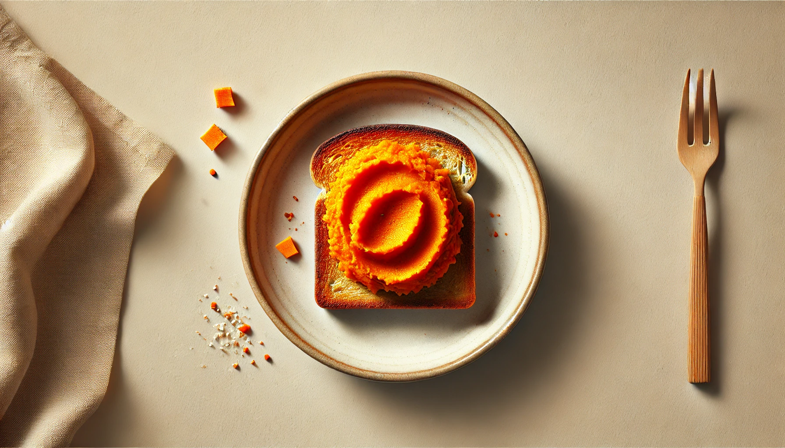
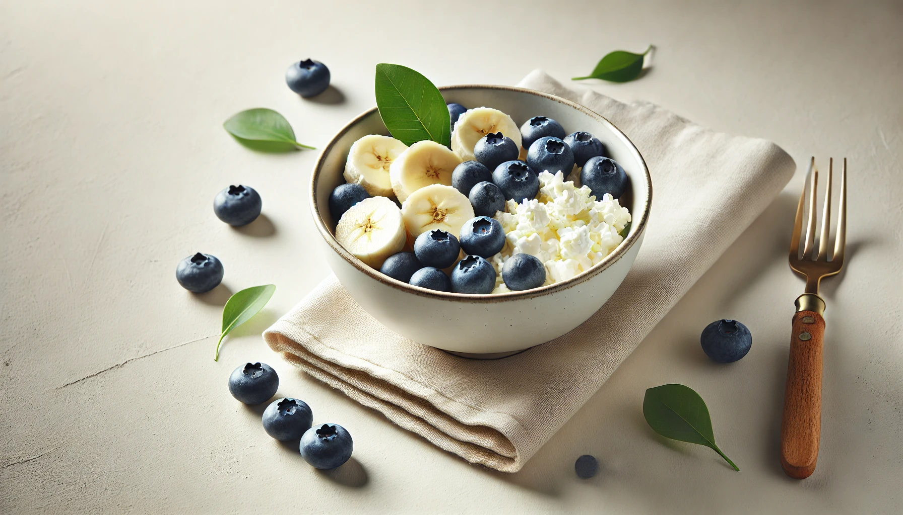
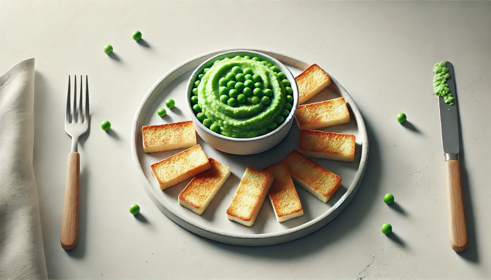
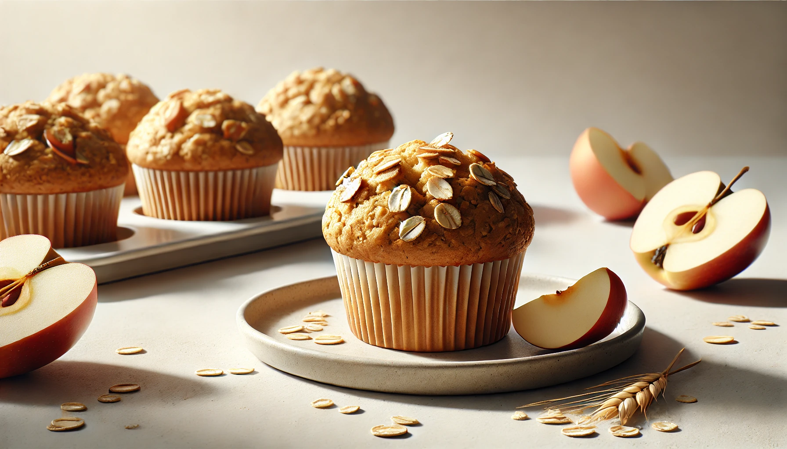
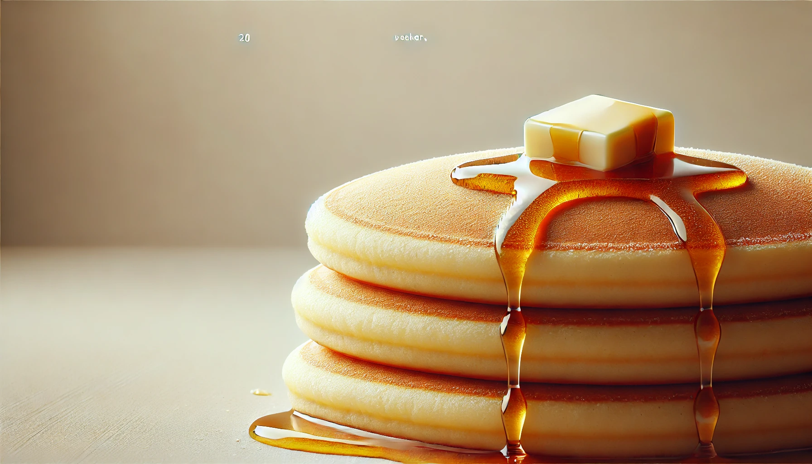
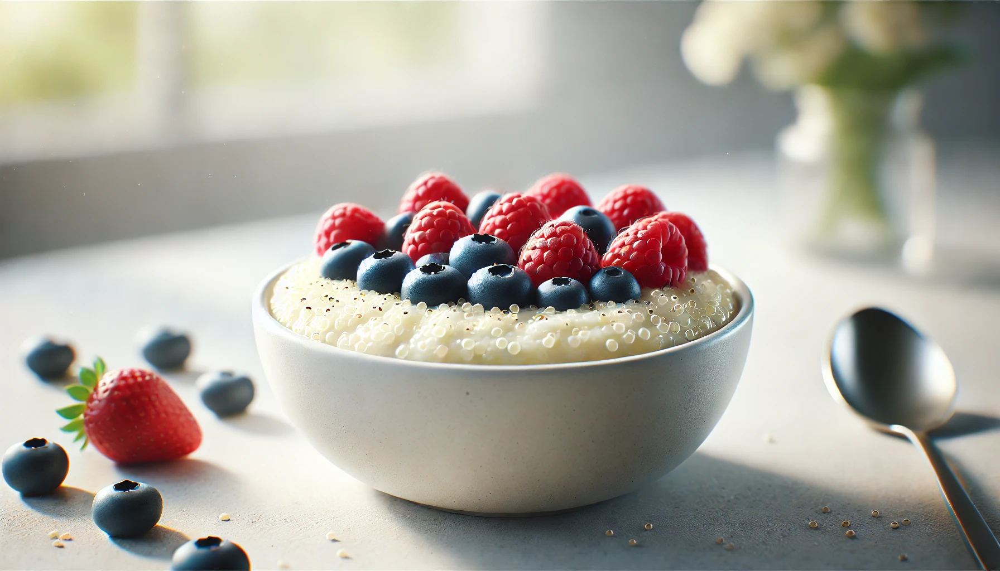
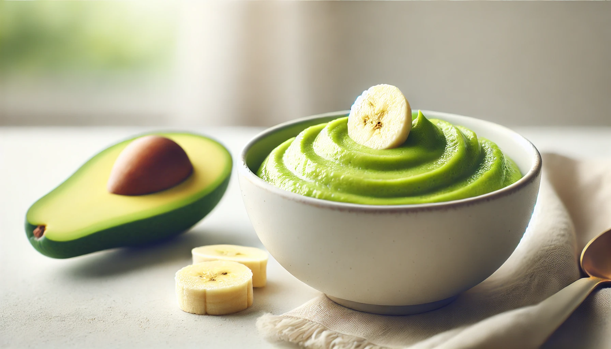

4-Week Toddler Breakfast Plan
Week 3 | Gentle Textures & New Flavors
This week focuses on simple whole foods with subtle seasoning and soft textures. Great for self-feeding and flavor exploration!

Breakfast Recipe
Sweet Potato Mash with Cinnamon & Toast Bites
Sweet and creamy with fiber and vitamin A.
Ingredients
¼ cup cooked sweet potato (mashed)
Pinch of cinnamon
½ slice wholegrain toast
Instructions
1. Mix cinnamon into mashed sweet potato.
2. Spread onto toast, cut into small squares.

Breakfast Recipe
Cottage Cheese with Soft Fruit
A calcium- and protein-rich combo.
Ingredients
¼ cup cottage cheese (small curd)
¼ banana, diced
2 soft blueberries (sliced if needed)
Instructions
1. Scoop cottage cheese into a bowl.
2. Top with soft diced fruit and serve.

Breakfast Recipe
Mashed Peas & Scrambled Eggs
A green twist to boost iron and protein.
Ingredients
¼ cup peas (cooked and mashed)
1 egg
1 tsp milk
Instructions
1. Whisk egg and milk, cook gently in a pan.
2. Add mashed peas and stir to combine.
3. Serve warm with soft toast strips.

Breakfast Recipe
Apple Oat Muffins
Soft and easy-to-hold muffins for breakfast or snack.
Ingredients
½ apple (grated)
½ banana (mashed)
3 tbsp oats
1 egg
Instructions
1. Mix all ingredients.
2. Spoon into greased mini muffin tins.
3. Bake at 180°C (350°F) for 15–18 minutes.

Breakfast Recipe
Smoothie Pancakes
Pancakes made from smoothie ingredients - fun and familiar!
Ingredients
¼ banana
2 tbsp plain yogurt
1 tbsp oat flour or ground oats
1 egg
Instructions
1. Blend ingredients into smooth batter.
2. Cook spoonfuls on a skillet until bubbles form and flip.

Breakfast Recipe
Warm Quinoa Porridge with Berries
A protein-rich porridge alternative.
Ingredients
¼ cup cooked quinoa
½ cup milk
2 soft berries (sliced or mashed)
Instructions
1. Simmer quinoa and milk until warm and creamy.
2. Add berries and stir before serving.

Breakfast Recipe
Creamy Avocado & Banana Smoothie Bowl
Smooth and energizing with healthy fats.
Ingredients
¼ ripe avocado
¼ banana
2 tbsp yogurt
1 tbsp oats (optional)
Instructions
1. Blend all ingredients until smooth.
2. Serve in a bowl and top with thin banana slices.
Week 4 ☛ Here